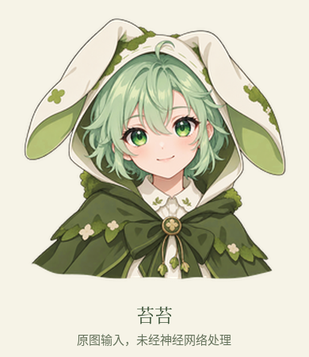
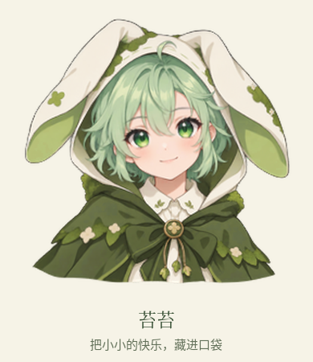
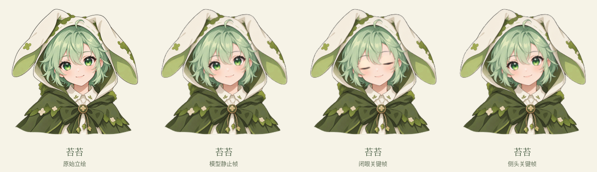

THA3 / 离线动作实验 / 未烧录让苔苔轻轻眨一下眼。
保留原立绘，用神经网络生成眼睑与头部变化，不是整张图片上下移动。下方为 390 × 450 像素方形屏幕比例；窄屏会等比缩小，并非物理尺寸。请重点观察眼睛、脸型、兔耳及透明边缘。

原始立绘

眨眼 / 短暂闭合后恢复
轻微侧头 / 左右小角度
关键帧对比

这是动画可行性试片，不代表最终美术验收。模型可能重绘细节或造成变形；板端帧率、存储占用、随机播放与功耗尚未验收。
模型：Talking Head Anime 3 · pkhungurn，模型 CC BY 4.0 / 代码 MIT。变更：原图尺寸归一化、姿态驱动、裁切与屏幕合成。生成参数与来源记录